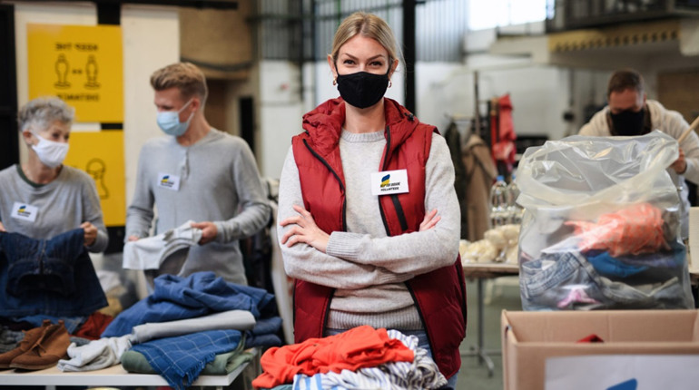
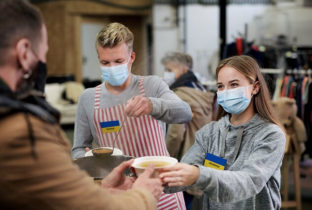
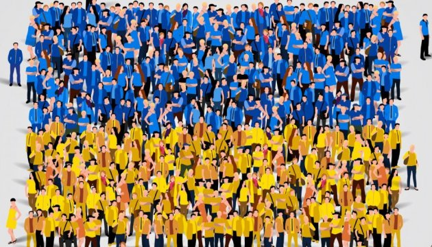

Що таке волонтерська організація?
Для початку визначимось з термінологією. Волонтерство – це форма благодійної діяльності, спрямована на допомогу іншим, і базується на законності, рівності, добровільності, безоплатності й неприбутковості.
Ті, хто займаються такою діяльністю, – волонтери. Вони добровільно об’єднуються в організації і безкоштовно допомагають. Зазвичай добровольці вибирають 1-2 напрями для своєї діяльності, які відповідають їх внутрішнім запитам і розумінню справедливості, необхідності, гуманності тощо.
На тлі війни ми є свідками того, як швидко налагоджуються координаційні та логістичні процеси, закупівля, інформаційна підтримка. За декілька тижнів хаотичних рухів вибудувались логічні ланцюжки постачань, підвищилась ефективність волонтерів усіх напрямів.
Ось невеликий перелік питань, які закривають волонтери своєю діяльністю:
- забезпечення Збройних сил амуніцією та військовими приладами;
- евакуація та перевезення біженців і переселенців;
- донорство;
- пошук дітей та їхніх батьків;
- пошук прихистку;
- забезпечення одягом, їжею, ліками, речами найпершої потреби;
- порятунок тварин;
- допомога самотнім людям поважного віку;
- інформаційна підтримка.
Також волонтери безкоштовно надають допомогу у межах свого професійного напрямку – психологічні, рекламні, медичні послуги, пошиття одягу тощо.
Якщо ми говоримо про найпомітнішу активність волонтерських організацій сьогодні, то більшість добровольців зосереджена саме на забезпеченні потреб української армії, ТрО та постраждалих від війни наших громадян.
Офіційні та самоорганізовані
Волонтерські організації можна поділити на:
- офіційні. Такі волонтери зареєстровані у державному реєстрі, є документи, що підтверджують діяльність, та спрощені алгоритми перетину кордонів;
- неофіційні. Сформовані стихійно, не мають офіційного статусу, діють від власного імені, як приватні особи.
Офіційні волонтерські організації обов'язково мають пакет документів, що засвідчують їх правовий статус та дозволяють працювати з міжнародними організаціями, юридичними особами, а також залучати інвестиції та отримувати гранти від уряду.
Волонтери ведуть звітність про витрачені кошти та використані ресурси, яку викладають у відкритий доступ. Зазвичай на власній вебсторінці, де кожен може з ними ознайомитись.
Представники цих організацій також мають документ – паспорт волонтера, який засвідчує належність людини до конкретної організації чи проєкту.
Організація може охоплювати великий спектр напрямків допомоги. Наприклад, вони купують військову амуніцію та прилади великими партіями в сусідніх країнах, отримують фінансування або безпосередньо речі/товари/продукти від закордонних фондів.
Неофіційні, або самоорганізовані, волонтерські організації зазвичай формуються у разі потреби та за особистою ініціативою. Вони перебувають поза правовим статусом, не мають офіційних звітів про витрачені кошти, не можуть приймати фінансування від юридичних осіб тощо.
Найчастіше покривають невеликий спектр потреб, закриваючи запити конкретного населеного пункту. Наприклад, збирають їжу та речі для постраждалих під час бойових дій, закуповують по декілька одиниць амуніції конкретним людям з родичів/знайомих з київської ТрО.
В обох випадках волонтерські організації є некомерційними та спонсоруються коштами суспільства, юридичних осіб та інших організацій. Але головним джерелом фінансування завжди залишаються громадяни – тобто ми з вами.
Хочу допомогти волонтерам. Як це зробити?
Перед тим, як хаотично допомагати – визначтеся, що вам відгукується найбільше. Можливо, ви хочете робити лише те, що допомагає нашій армії, або вам болить за тварин, які залишились без власників на вулиці, або турбуєтесь про діток у лікарнях, яким не вистачає ліків.
Краще прицільно волонтерити й бачити власний внесок, а ніж розпорошуватись і відчувати смуту через те, що допомагаєте непомітно навіть для себе.
Знайдіть тих волонтерів, які фокусуються на тому напрямку, який вас цікавить. Вони вже знають процеси, налагодили контакти та розуміють, як саме ви можете стати корисним членом команди.
Сьогодні зросла кількість шахраїв, які наживаються на біді й збирають гроші собі в кишеню. Якщо хочете допомогти офіційним або самоорганізованим волонтерам, будьте обачними. Уважно перевіряйте інформацію щодо волонтерської організації, відвідуйте лише офіційні вебсайти або просіть рекомендації в знайомих.
Зробить перелік того, як ви можете допомогти:
- у вас є машина;
- вільна кімната;
- кілька годин на день, які ви можете присвятити волонтерству;
- широке коло знайомих;
- знання іноземних мов;
- вміння комунікувати із державними установами тощо.
Навіть якщо ви не будете використовувати усі формати, ви зрозумієте, що також корисні як волонтер.
Для вас є багато опцій:
- зробити благодійний фінансовий внесок. Найпростіший варіант, бо ви виступаєте інвестором, а волонтери знаходять шляхи, як перетворити гроші у матеріальну допомогу ЗСУ, ТрО, переселенцям, дітям тощо;
- віддати речі, які наразі є необхідними для когось. Важливо знати, що віддавати й кому. Туфлі на підборах зараз недоречні у якості допомоги. Лікарні, дитячі будинки та будинки для літніх людей, потребують одягу;
- надати свої послуги. Можна приєднатися до професійного ком’юніті, і вам допоможуть увійти в процеси;
- знайти прихисток для біженців. Ви можете надавати своє приміщення, можете знаходити вільні простори або координувати пошуки;
- стати донором крові. Волонтерські організації допоможуть вам здати кров саме в тій лікарні і тій людині, якій це необхідно;
- стати «руками», тобто фізично долучитись до організації/закладів, які пропонують допомогу. Наприклад, готувати їжу, носити продукти/ліки адресно, годувати людей, які живуть у метрополітені тощо;
- стати автоволонтером: підвозити людей (як таксі, але безкоштовно), перевозити вантажі різних форматів (продукти, речі, тварин). Знайдеться заняття для власників і невеличких авто, і вантажівок;
- долучитися до IT-армії: DDoS-ти ворожі канали, сайти, відправляти їх у спам, писати на них скарги;
- створювати петиції;
- координувати різні процеси, поєднуючи людей. Наприклад, працювати у колцентрі як оператор, приймати заявки на евакуацію, доставлення ліків, вивіз тварин, які застрягли у квартирах, або покупку амуніції.
За час війни українці-волонтери вже змогли вибудувати процеси. Тому якщо ви шукаєте, як себе застосувати в цей час, зверніться до місцевих волонтерів або представників офіційної організації й запитайте, яка саме допомога зараз найнеобхідніша.
Як знайти волонтерів?
Введіть в пошуковику «волонтерські організації Україна» й ознайомтеся зі списком офіційних організацій. Зазвичай великі спілки приймають як допомогу кошти та пропонують вам обрати потреби, на покриття яких будуть витрачені гроші.
Звертайте увагу на дописи/сторізи людей, яким ви довіряєте, вони часто публікують посилання на тих, з ким співпрацювали, навіть, якщо це невеликі організації. Питайте у друзів про те, кого вони знають: сьогодні люди є найкращими ЗМІ, ви швидко знайдете потрібні контакти.
- Платформа, що об'єднує волонтерів, які забезпечують потреби ЗСУ і ТрО (більше для одинаків)
- Благодійний фонд «Крила надії». Підтримка онкохворих дітей та дітей, що потребують трансплантації органів
- Благодійний фонд допомоги ветеранам та військовим «Повернись живим»
- Львівські волонтери, що забезпечують потреби військових «Допоможи фронту»
- Національна скаутська організація України «Пласт Львів»
- Некомерційна організація, що опікується літніми людьми «Життєлюб»
- Благодійний фонд Сергія Притули
- Допомога вимушеним переселенцям, тим, хто постраждав у зоні АТО Волонтерське об’єднання «Кожен Може допомогти»
- Організація для закупівлі амуніції, засобів захисту, зв’язку та розвідки, уніформи та харчування для військових «Армія SOS»
- Благодійна організація, що підтримує громадян, які відстоювали цінності демократії в нашій країні і постраждали через озброєний конфлікт «Восток SOS»
- Благодійний фонд «Регіональний фонд Благочестя»
Отже, якщо ви плануєте долучитися до волонтерського руху насамперед запитайте себе, скільки часу, зусиль, грошей ви готові віддати на це. Навіть якщо ви можете допомогти мінімально – це все одно розвантажить волонтерів України та наблизить нашу перемогу. Виберіть собі напрямок і регулярно допомагайте.